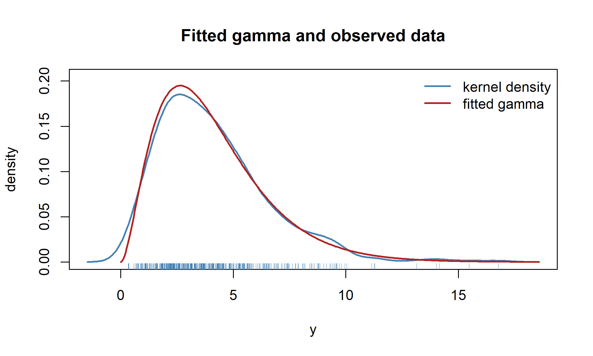

set.seed(20260730)
d <- gamma_distrib()
y <- distrib_rng(d, 500, list(mu = 4, sigma2 = 6))
fit <- fit_distrib(d, y)
fit
#> Maximum-likelihood fit: gamma
#> Observations: 500 Log-likelihood: -1090 AIC: 2184 BIC: 2192
#> Method: Fisher scoring (converged in 5 iterations)
#>
#> Parameter scale (95% CI mapped from the link scale):
#> Estimate Std. Error 2.5% 97.5%
#> mu 4.0937 0.1088 3.8859 4.3127
#> sigma2 5.9233 0.4744 5.0628 6.9301
#>
#> Link scale (log, log):
#> Estimate Std. Error
#> mu 1.4095 0.0266
#> sigma2 1.7789 0.08015 Fitting a distribution
The three chapters so far have built objects and derived what can be computed from them: links carrying four derivatives in both directions, distributions carrying scores, informations and derivatives to fourth order, and operators that turn one distribution into another while keeping all of it. Nothing so far has estimated anything. This chapter closes that gap. It is shorter than the others, and deliberately so: almost everything it needs has already been derived, and the pleasure of the exercise is watching the earlier machinery fall into place with very little new mathematics.
The task is the simplest one in which the machinery is exercised end to end. Given a sample \(y_1, \dots, y_n\) assumed independent and identically distributed from a member of one of the families in the catalogue, estimate the parameter by maximum likelihood, and report an uncertainty for it. There is no regression here — no covariates, no design matrix — and that is the point: fit_distrib() is the smallest complete consumer of the stack, and every component it uses is a component that a regression front end will use in the same way.
5.1 Maximising on the unconstrained scale
Write the total log-likelihood of the sample as
\[\ell(\theta) = \sum_{i=1}^{n} \log f(y_i; \theta),\]
a function of the \(p\)-vector \(\theta\), each of whose components is confined to its own open interval \(\Theta_j\). Maximising a function over a product of open intervals is an awkward problem to hand to a general optimiser. Every proposal must be checked for admissibility; a step that overshoots must be shortened rather than taken; and near a boundary the objective is unbounded or undefined, so the optimiser spends its effort fighting the constraint rather than climbing the likelihood.
The stack disposes of this by never optimising in \(\theta\) at all. Each parameter carries a link, and the estimation is carried out in
\[\eta = \big(g_1(\theta_1), \dots, g_p(\theta_p)\big) \in \mathbb{R}^{p},\]
which is unconstrained by construction. The reparameterisation costs nothing, because maximum likelihood is invariant under a reparameterisation: if \(\hat\eta\) maximises \(\ell(h(\eta))\) then \(h(\hat\eta)\) maximises \(\ell(\theta)\), the two problems having the same stationary points wherever \(h\) is a diffeomorphism — which Definition 2.1 guarantees, \(h'\) never vanishing. The gain is that admissibility becomes automatic. Whatever the optimiser proposes, \(h(\eta)\) lands inside the domain, because that is what the inverse link is: a bijection onto \(\Theta\). There is no rejection step and no boundary to guard.
What the change of scale does cost is derivatives, and those have already been paid for. The score and the Hessian with respect to \(\eta\) are exactly what Section 3.4 computed, and fit_distrib() obtains them by asking for them:
\[ U(\eta) = \sum_{i=1}^{n} \frac{\partial \ell_i}{\partial \eta}, \qquad H(\eta) = \sum_{i=1}^{n} \frac{\partial^{2} \ell_i}{\partial \eta \,\partial \eta^\top}, \]
each summed over observations because the sample is independent and the total log-likelihood is the sum of the individual ones.
5.2 Fisher scoring, and why it is the default
All three optimisers offered are variations on one idea: approximate the log-likelihood near the current point by a quadratic and step to the maximum of that quadratic. Writing \(I\) for the matrix that plays the role of the negative curvature, the update is
\[\eta^{(t+1)} = \eta^{(t)} + I^{-1} U\big(\eta^{(t)}\big),\]
and the three methods differ only in what they use for \(I\). Newton–Raphson uses the observed information \(-H(\eta)\); Fisher scoring uses the expected information \(-\mathbb{E}[H(\eta)]\); BFGS uses neither, building an approximation from successive gradients instead.
The default is Fisher scoring, for a reason that Corollary 3.1 supplied two chapters ago and that is worth restating because it is easy to mistake for a mere convenience. On the link scale the expected information is
\[\mathbb{E}[I_\eta] = \operatorname{diag}(h')\,\mathbb{E}[I_\theta]\,\operatorname{diag}(h'),\]
a congruence transform. A congruence transform of a positive definite matrix is positive definite, so if the model is identified on the parameter scale then the matrix Fisher scoring inverts is positive definite on the link scale as well, and the step it computes is guaranteed to be an ascent direction. The observed Hessian carries no such guarantee: away from the optimum \(-H\) can fail to be positive definite, and the Newton step can then point downhill. This is not a statement about which estimator is better — at the optimum the two informations agree in expectation — but about which iteration is better behaved on the way there.
Ascent being a direction rather than a distance, the step itself is halved until it earns its keep: the candidate \(\eta + s\,\Delta\) is tried with \(s = 1\), and \(s\) is halved until the log-likelihood does not decrease. Since the direction is an ascent direction, some sufficiently small \(s\) always succeeds, so the iteration is monotone in the log-likelihood by construction, and a step that would leap into a region where the density overflows is simply not taken.
Convergence is declared when the score is numerically zero or the log-likelihood has stopped moving, whichever comes first,
\[\max_j \lvert U_j \rvert < \texttt{tol} \qquad\text{or}\qquad \lvert \Delta \ell \rvert < \texttt{tol}\,(\lvert \ell \rvert + \texttt{tol}),\]
the second criterion measured relative to the log-likelihood’s own magnitude, since an absolute threshold means something quite different for a sample of ten and one of ten million.
NoteThe non-regular case, revisited
Section 3.9 showed that the Laplace location sits at a kink: its observed second derivative \(\ell^{(\mu\mu)}\) is zero almost everywhere, while the information, defined as the variance of the score, is \(1/b^{2}\). The consequence for estimation is immediate and rather striking. Newton–Raphson on a Laplace has nothing to invert — the observed information in \(\mu\) vanishes identically — whereas Fisher scoring has \(1/b^{2}\) and proceeds without noticing anything unusual. That the default method is the one that works here is not a coincidence: the same property that makes the expected information the right object for a non-regular family makes it the right matrix to invert.
5.3 Starting values and what happens when they fail
A likelihood need not be concave, and a fit started in the wrong place can converge to a local maximum, to a boundary, or not at all. Two devices handle this without troubling the user.
When no starting value is supplied, several are drawn at random from the admissible region with generate_random_theta() and tried in turn, the first that converges being kept. And if the chosen method fails from a given start — whether by exceeding the iteration budget, by producing a step that is not finite, or by raising an error outright, which a numerically approximated expected information can do when its quadrature diverges at an awkward parameter value — the fit falls back to BFGS from that same start before moving on to the next. BFGS is slower and uses no second-order information, but it is unfussy, and a slow answer is better than none.
Only when every start has failed by every route does fit_distrib() give up, and it then says so and asks for a starting value rather than returning something unusable.
5.4 From the link scale back to the parameter scale
The optimiser returns \(\hat\eta\) and the information \(I_{\hat\eta}\), from which the asymptotic variance on the link scale is the usual inverse, \(V_\eta = I_{\hat\eta}^{-1}\). What the user wants, though, is an uncertainty for \(\hat\theta = h(\hat\eta)\), and here the diagonal Jacobian does its last piece of work. The delta method gives
\[V_\theta = \operatorname{diag}(h')\,V_\eta\,\operatorname{diag}(h'),\]
with \(h'\) evaluated at \(\hat\eta\) componentwise — the same congruence that Corollary 3.1 applied to the information, now applied to its inverse. The two statements are the same statement: if \(I_\eta = \operatorname{diag}(h')^{-1} I_\theta \operatorname{diag}(h')^{-1}\) then inverting both sides gives exactly the display above. It is a small pleasure that the transformation appearing in the derivative calculus of Section 3.4 and the one appearing in the delta method are not two facts to remember but one.
Intervals are built where the normal approximation is most nearly true — on the unconstrained scale — and mapped back afterwards:
\[ \big[\hat\eta_j - z_{1-\alpha/2}\,\mathrm{se}(\hat\eta_j),\; \hat\eta_j + z_{1-\alpha/2}\,\mathrm{se}(\hat\eta_j)\big] \;\longmapsto\; h_j\big(\,\cdot\,\big). \]
Two properties follow, and both are the reason for doing it in this order. The mapped interval cannot leave the parameter’s domain, since \(h_j\) maps onto \(\Theta_j\) and nowhere else: a variance never acquires a negative lower limit, a probability never an upper limit above one, however small the sample. And the interval is not symmetric about \(\hat\theta_j\), which is as it should be — symmetry on the \(\theta\) scale is an artefact of a linear approximation, not a property of the likelihood.
One detail of the implementation is a direct consequence of Definition 2.1 having declined to require that links increase. A decreasing link — the upper-bounded \(g(\theta) = \log(u - \theta)\) is the catalogue’s example — sends the lower end of the \(\eta\)-interval to the upper end of the \(\theta\)-interval, so the two mapped endpoints are sorted before being reported. Code that assumed an increasing link would return an interval with its ends the wrong way round, and would do so silently.
5.5 A fit end to end
The estimates sit near the values the sample was generated from, and the interval for sigma2 is visibly asymmetric — longer to the right, as a variance estimated on a log scale should be. The pieces of the fit are all available individually, on either scale:
coef(fit)
#> mu sigma2
#> 4.093717 5.923300
vcov(fit)
#> mu sigma2
#> mu 0.01184660 0.03428227
#> sigma2 0.03428227 0.22506371
fit@eta # the estimates on the link scale
#> mu sigma2
#> 1.409453 1.778894
fit@ci # intervals on the parameter scale
#> lower upper
#> mu 3.885854 4.312700
#> sigma2 5.062783 6.930078That the two variance matrices are related by the diagonal Jacobian, exactly as Section 5.4 claims, can be seen directly:
J <- vapply(seq_along(d@params), function(i) {
linkfunctions7::dlinkinv(d@link_params[[d@params[i]]], fit@eta[i])
}, numeric(1))
diag(J) %*% fit@vcov_eta %*% diag(J)
#> [,1] [,2]
#> [1,] 0.01184660 0.03428227
#> [2,] 0.03428227 0.22506371The maximised log-likelihood, the information criteria, the number of iterations and the method actually used — which may not be the one requested, if the fallback was taken — are all carried on the fitted object, and simulate() and plot() methods compare the fitted distribution against the data it came from.
plot(fit)
5.6 What is deliberately absent
It is worth being explicit about the boundary of this chapter, because the apparatus assembled here is capable of a good deal more than it is asked to do.
There are no covariates. Every observation shares one \(\theta\), so the link scale is a \(p\)-vector rather than a set of linear predictors, and the score is a \(p\)-vector rather than a \(\mathrm{X}^\top\)-weighted sum. Adding covariates changes the bookkeeping and not the mathematics: the chain rule acquires one more link in the chain, \(\eta = X\beta\), whose Jacobian is \(X\) rather than \(\operatorname{diag}(h')\), and everything in Section 5.4 goes through with the two composed. That is the subject of the model layer, not of this one.
Nor is censoring handled here, although Section 3.6 supplied the derivatives that a censored likelihood needs. Assembling them into a likelihood requires a status vector alongside the response, and an interface for saying which observations are censored and how — a front end that does not yet exist.
Finally, the optimisers are the three above and the user cannot supply another. The stack’s stated ambition is that optimisers should be pluggable and that the user should be able to choose a Bayesian treatment instead; that too belongs to the model layer.